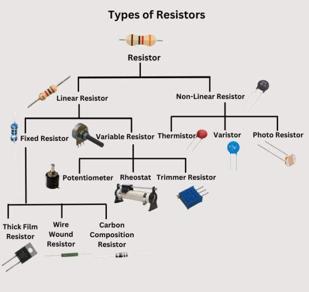
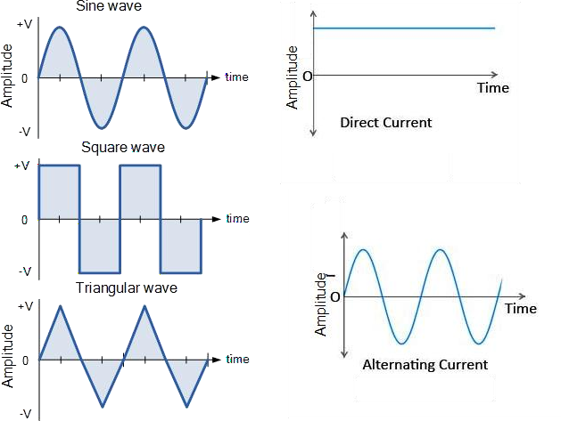
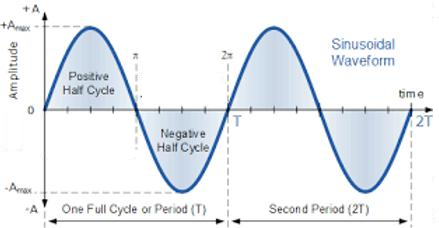

1.1 Definition of Electronics
Electronics is one of the most important branches of engineering that deals with the behaviour, control and utilization of electrons in electronic devices and circuits.
“According to IRE (Institute of Radio Engineering), Electronics is a Branch of Science and Engineering which deals with the study of electronic devices, its processing and utilization.”
Electronics studies devices such as Diodes, Transistors, ICs, Sensors and Microprocessors which are used for processing, controlling and transmitting electrical signals.
1.2 Applications of Electronics
Electronics plays a crucial role across many sectors, from defense and industrial automation to healthcare, telecommunication and domestic applications.

1. Defense
Radar, missile guidance, drones, secure satellite communication, sonar and night vision systems enhance national security.

2. Industrial & Instrumentation
PLCs, robots, inverters, oscilloscopes, multimeters, flow meters and pressure sensors are widely used for automation.

3. Medical
MRI, CT scanners, ECG machines, pacemakers, ultrasound equipment and pulse oximeters assist in diagnosis and patient care.

4. Telecommunication
Smartphones, satellite communication, fiber optic networks and wireless communication enable global connectivity.

5. Domestic
Smart TVs, refrigerators, washing machines, microwave ovens, smart lighting and wearable devices improve daily life.
1.3 Definition of Electrical Engineering
Electrical Engineering is the branch of engineering concerned with the generation, transmission, distribution and utilization of electrical power.
Electrical Engineering is the branch of engineering that deals with the study of generation, transmission, distribution and utilization of electrical power using devices such as generators, transformers, motors and transmission lines.
1.4 Applications of Electrical Engineering
Electrical engineering deals with the generation, transmission, distribution and utilization of electrical power for domestic, commercial and industrial applications.

1. Power Generation
Thermal, hydro, solar and wind power plants generate electricity which is supplied through transformers, substations and transmission lines.

2. Industrial
Electric motors, generators, industrial drives and protection systems operate industrial machines efficiently.
3. Transportation
Electric vehicles, metro railways, elevators, escalators and EV charging stations depend on electrical power.

4. Agriculture
Irrigation pumps, solar pumping systems, dairy equipment, grain processing machines and cold storage improve agricultural productivity.

5. Domestic & Commercial
Lighting systems, HVAC, water pumps, electrical wiring and commercial power distribution are essential in buildings.
1.5 Difference Between Electrical & Electronics Engineering
Electrical Engineering mainly deals with power, whereas Electronics Engineering deals with signals and information processing.
| Electrical Engineering | Electronics Engineering |
|---|---|
| High voltage & high current systems | Low voltage & low current systems |
| Mainly uses AC | Mainly uses DC |
| Generation, transmission & distribution of power | Control, processing & communication of signals |
| Generators, Transformers, Motors | Diodes, Transistors, ICs, Microprocessors |
| Power plants, substations, electric motors | Mobile phones, computers, televisions, medical devices |
⚡ Electrical Engineering = Power Engineering
Generation • Transmission • Distribution • Utilization
🔋 Electronics Engineering = Signal Engineering
Control • Processing • Communication • Automation
2. Basic Electrical Quantities
Electrical quantities are the measurable parameters used to describe the behavior of an electrical circuit. The three most fundamental quantities are Current (I), Voltage (V), and Power (P).
2.1 Electric Current (I)
Definition
Electric current is the rate of flow of electric charge through a conductor. It is the movement of electrons caused by the applied voltage.
Electric Current is the rate at which electric charge flows through a conductor.
Current • Electric Current • Flow of Charge • Line Current
Unit & Symbol
| Quantity | Value |
|---|---|
| Symbol | I |
| SI Unit | Ampere (A) |
| Measuring Instrument | Ammeter |
Formula
Where:
- I = Current (Ampere)
- Q = Electric Charge (Coulomb)
- t = Time (Second)
Current Flow Diagram
Worked Example
Question: If 10 Coulombs of charge flow in 2 seconds, calculate the current.
Given: Q = 10 C, t = 2 s
I = Q / t
I = 10 / 2 = 5 A
2.2 Potential Difference (Voltage)
Definition
Potential Difference is the work done to move one Coulomb of charge from one point to another. It is the driving force that causes current to flow.
Potential Difference is the amount of work done in moving a unit positive charge between two points in an electrical circuit.
Voltage • Potential Difference • Electric Potential • EMF (when produced by a battery)
Unit & Symbol
| Quantity | Value |
|---|---|
| Symbol | V |
| SI Unit | Volt (V) |
| Measuring Instrument | Voltmeter |
Formula
Where:
- V = Voltage (Volt)
- W = Work Done (Joule)
- Q = Charge (Coulomb)
Voltage Across a Load
Worked Example
Question: A battery performs 24 J of work to move 6 C of charge. Find the voltage.
Given: W = 24 J, Q = 6 C
V = W / Q
V = 24 / 6 = 4 Volt
2.3 Electrical Power (P)
Definition
Electrical Power is the rate at which electrical energy is consumed or produced. It indicates how much electrical work is performed in one second.
Electrical Power is the rate of conversion of electrical energy into another form of energy.
Unit & Symbol
| Quantity | Value |
|---|---|
| Symbol | P |
| SI Unit | Watt (W) |
| Measuring Instrument | Wattmeter |
Formula
Where:
- P = Power (Watt)
- V = Voltage (Volt)
- I = Current (Ampere)
Power Consumed by Load
Worked Example
Question: A bulb operates at 12 V and draws 2 A. Calculate the power.
Given: V = 12 V, I = 2 A
P = V × I
P = 12 × 2 = 24 Watt
Important Concept
- Voltage (V) provides the driving force.
- Current (I) is the flow of electrons caused by voltage.
- Power (P) is the electrical energy consumed by the load.
Power Triangle
From the Power Triangle:
V = P / I
I = P / V
2.4 Summary of Basic Electrical Quantities
| Quantity | Symbol | SI Unit | Formula | Meaning |
|---|---|---|---|---|
| Electric Current | I | Ampere (A) | I = Q / t | Flow of electric charge |
| Voltage | V | Volt (V) | V = W / Q | Driving force of current |
| Electrical Power | P | Watt (W) | P = V × I | Rate of electrical energy consumption |
3. Passive Electronic Components
Passive electronic components are devices that do not generate electrical energy. They either oppose, store or transfer electrical energy in an electrical circuit. The three fundamental passive components are Resistor, Capacitor and Inductor.
⚡ Resistor → Opposes Current 🔋 Capacitor → Stores Electric Charge 🧲 Inductor → Stores Magnetic Energy
3.1 Resistor
A resistor is an electrical component that limits or regulates the flow of electric current in a circuit. It is one of the most basic and widely used components in electronics.
Resistance is its electrical value measured in Ohms (Ω).
Construction of Resistor

Typical Carbon Film Resistor
Definition
Denoted By
| Parameter | Value |
|---|---|
| Letter | R |
| Unit | Ohm (Ω) |
| Example | R = 10 Ω |
Resistor Symbol
Circuit Symbol of Resistor
Types of Resistors
Fixed Resistors
Resistance value remains constant.
- Carbon Composition
- Metal Film
- Wire Wound
Variable Resistors
Resistance can be adjusted manually.
- Potentiometer
- Rheostat
- Trimmer
Classification of Resistor

Classification of Linear & Non-linear Resistors
Formula
ρ = Resistivity L = Length A = Cross-sectional Area
Advantages
- Simple Design
- Cost Effective
- Stable Operation
- Heat Dissipation
Disadvantages
- Energy Loss
- Limited Control
- Heat Generation
Applications
- Current Limiting
- Voltage Divider
- Signal Conditioning
- Transistor Biasing
- Electric Heater
Colour coding is used to identify the resistance value of fixed resistors. Solved examples will be covered during lecture sessions.
3.2 Capacitor
A capacitor is a passive electrical component that stores electrical energy in an electric field. It consists of two conductive plates separated by an insulating material called dielectric.
Construction of Capacitor

Parallel Plate Capacitor Construction
Definition
Denoted By
| Parameter | Value |
|---|---|
| Letter | C |
| Unit | Farad (F) |
| Practical Units | μF, nF, pF |
Capacitor Symbols

Fixed & Variable Capacitor Symbols
Types of Capacitors
Fixed Capacitors
- Ceramic
- Electrolytic
- Film
- Mica
- Paper
- Glass
Applications
- Power Supply Filtering
- Timing Circuits
- Coupling / Decoupling
- Motor Starting
- Energy Storage
Formula
ε = Permittivity A = Plate Area d = Distance Between Plates
Advantages
- Stores Electrical Energy
- Noise Filtering
- Blocks DC
- Long Life
- Low Heat Loss
Disadvantages
- Low Energy Density
- Leakage Current
- Large Size at High Values
- Polarized Types Need Correct Polarity
- Voltage Rating Limitation
3.3 Inductor
An inductor is a passive electronic component that stores energy in a magnetic field when electric current flows through a coil of wire.
Construction of Inductor

Construction of Coil Type Inductor
Definition
Denoted By
| Parameter | Value |
|---|---|
| Letter | L |
| Unit | Henry (H) |
| Practical Units | mH, μH |
Inductor Symbols

Air Core, Iron Core, Ferrite Core & Variable Inductor
Types of Inductors
Core Types
- Air Core
- Iron Core
- Ferrite Core
- Variable Core
Applications
- Power Supplies
- Transformers
- Filters
- SMPS Energy Storage
- Inductive Sensors
Formula
N = Number of Turns Φ = Magnetic Flux I = Current
Advantages
- Magnetic Energy Storage
- Current Smoothing
- Filtering
- Wireless Energy Transfer
- Transformer Operation
Disadvantages
- Bulky Size
- Heavy Iron Core
- Copper & Core Losses
- Expensive
- Magnetic Interference
Resistor → Opposes current | Capacitor → Stores electric field energy | Inductor → Stores magnetic field energy
4. Waveform Representation & Signal Characteristics
In electrical and electronics engineering, voltage and current vary with time. This variation is represented graphically using a waveform. Understanding waveform characteristics is essential for analysing AC circuits and signals.
After this section you will be able to identify waveform, full cycle, frequency, time period and amplitude of an AC signal.
4.1 Waveform Representation

Sinusoidal AC Waveform Representation
Definition
Mathematical Expression of Instantaneous Voltage
Where,
| Symbol | Meaning |
|---|---|
| v(t) | Instantaneous value of voltage (or current) |
| Vm | Maximum (Peak) Voltage |
| ω | Angular Frequency (ω = 2πf) |
| t | Time in seconds |
4.2 Signal Characteristics

Important Characteristics of an AC Waveform
1. Full Cycle
Positive Half Cycle
The portion of the waveform above the zero reference line. It starts from zero, reaches the maximum positive value and returns to zero.
Negative Half Cycle
The portion below the zero reference line. It starts from zero, reaches the maximum negative value and returns to zero.
2. Frequency (f)
| Country | Supply Frequency |
|---|---|
| India / Asian Countries | 50 Hz |
| United States | 60 Hz |
3. Time Period (T)
4. Amplitude (Peak Value)
| Quantity | Symbol |
|---|---|
| Peak Voltage | Vm |
| Peak Current | Im |
Amplitude tells us how high the waveform rises, while Frequency tells us how fast it repeats.
4.3 Summary Table
| Quantity | Symbol | Unit | Formula | Meaning |
|---|---|---|---|---|
| Frequency | f | Hertz (Hz) | f = 1/T | Number of cycles per second |
| Time Period | T | Second (s) | T = 1/f | Time required for one cycle |
| Amplitude | Vm, Im | Volt / Ampere | Maximum Value | Peak value of waveform |
| Full Cycle | — | Cycle | Positive + Negative Half Cycle | One complete oscillation |
Students are frequently asked to define Frequency, Time Period, Amplitude and draw a labelled AC waveform. Make sure your uploaded wavechar.png clearly shows all these parameters.
5. Ohm's Law
Ohm's Law is the fundamental law of electrical engineering that establishes the relationship between Voltage (V), Current (I) and Resistance (R). It was proposed by the German physicist Georg Simon Ohm in 1827 and forms the basis for analysing DC electrical circuits.
After studying this topic, students will be able to calculate Voltage, Current and Resistance using Ohm's Law and apply it to solve basic DC circuit numericals.
5.1 Definition
At constant temperature, the current flowing through a conductor is directly proportional to the applied voltage and inversely proportional to its resistance.
Basic Mathematical Expression of Ohm's Law
| Symbol | Meaning | SI Unit |
|---|---|---|
| I | Electric Current | Ampere (A) |
| V | Potential Difference / Voltage | Volt (V) |
| R | Resistance | Ohm (Ω) |
5.2 Relationship Between Voltage, Current & Resistance
The three electrical quantities are interdependent. Increasing voltage increases current, whereas increasing resistance decreases current.
| Condition | Effect on Current |
|---|---|
| Voltage increases | Current increases |
| Voltage decreases | Current decreases |
| Resistance increases | Current decreases |
| Resistance decreases | Current increases |
5.3 Ohm's Law Triangle
The Ohm's Triangle is a simple memory technique to derive all three formulas without memorising them separately.
Current
Voltage
Resistance
5.4 Live Ohm's Law Demonstration
Move the sliders below and observe how changing Voltage or Resistance affects the value of Current instantly according to Ohm's Law.
💡 Observation
- Current is directly proportional to Voltage.
- Current is inversely proportional to Resistance.
- This experimentally verifies Ohm's Law.
🔍 What do you observe?
- Increasing Voltage increases the Current.
- Increasing Resistance decreases the Current.
- The relationship follows Ohm's Law (I = V/R).
Increasing the voltage while keeping resistance constant increases current. Increasing resistance while keeping voltage constant decreases current. This experimentally verifies Ohm's Law.
5.5 Solved Numerical Examples
Numerical 1
Given:
V = 12 V
R = 4 Ω
Formula: I = V / R
Answer: 3 Ampere
Numerical 2
Given:
I = 2 A
R = 10 Ω
Formula: V = I × R
Answer: 20 Volt
Numerical 3
Given:
V = 24 V
I = 3 A
Formula: R = V / I
Answer: 8 Ohm
5.6 Real-Life Applications of Ohm's Law
LED Protection
Series resistors are used to limit current and protect LEDs from damage.
Electrical Measurements
Engineers calculate unknown voltage, current and resistance using Ohm's Law.
Heating Appliances
Electric irons, heaters and geysers convert electrical energy into heat through resistance.
Voltage Divider
Used in sensors, analog circuits and electronic measuring instruments.
5.7 Limitations of Ohm's Law
Ohm's Law is applicable only to ohmic conductors where temperature and other physical conditions remain constant. It does not accurately describe the behaviour of nonlinear semiconductor devices.
| Applicable | Not Applicable |
|---|---|
| Metallic conductors | PN Junction Diodes |
| Constant temperature circuits | Transistors |
| Linear resistive networks | Electrolytes |
| DC resistive circuits | Filament lamps (variable temperature) |
Ohm's Law is one of the most important fundamental laws used for analysing DC electrical circuits and forms the foundation for Kirchhoff's Laws, network analysis and electrical measurements.
5.8 Quick Revision Summary
| Quantity | Symbol | Unit | Formula |
|---|---|---|---|
| Voltage | V | Volt | V = I × R |
| Current | I | Ampere | I = V / R |
| Resistance | R | Ohm | R = V / I |
Use the VIR Triangle to derive any Ohm's Law equation instantly during examinations.
6. Kirchhoff's Current Law (KCL)
Kirchhoff's Current Law (KCL) is one of the fundamental laws used for analysing electrical circuits. It is based on the Law of Conservation of Charge, which states that electric charge can neither be created nor destroyed. Therefore, the total current entering a junction must always equal the total current leaving the junction.
After studying this topic, students will be able to apply KCL to determine unknown branch currents in electrical circuits and solve junction-based numerical problems.
6.1 Definition
The algebraic sum of all currents meeting at a node (junction) is always zero. In simple words, **Total Current Entering = Total Current Leaving**
or I₁ + I₂ = I₃ + I₄
6.2 What is a Node (Junction)?
A Node is a common connecting point where two or more conductors meet. KCL is always applied at a node to analyse the flow of current.
🟢 Entering currents are considered positive. 🔴 Leaving currents are considered negative. The algebraic sum is always zero.
6.3 Live KCL Demonstration
Move the sliders below and observe how the outgoing current automatically changes to satisfy Kirchhoff's Current Law.
- Increasing I₁ increases the outgoing current.
- Increasing I₂ also increases the outgoing current.
- The node always satisfies ΣI = 0.
6.4 Mathematical Expression
If currents I₁ and I₂ enter the node while I₃ and I₄ leave the node:
or
| Symbol | Description |
|---|---|
| I₁, I₂ | Incoming branch currents |
| I₃, I₄ | Outgoing branch currents |
| ΣI | Algebraic sum of currents at a node |
6.5 Solved Numerical Examples
Example 1
Given:
- I₁ = 4 A
- I₂ = 6 A
Find outgoing current I₃.
Answer: 10 Ampere
Example 2
Given:
- Incoming = 12 A
- Outgoing I₁ = 5 A
Find I₂.
Answer: 7 Ampere
Example 3
Given:
- I₁ = 3 A
- I₂ = 2 A
- I₃ = 1 A
Find I₄.
Answer: 4 Ampere
6.6 Applications of KCL
Distribution Networks
Used for analysing current distribution in electrical wiring systems.
PCB Design
Helps engineers determine branch currents in electronic circuits.
Parallel Circuits
Current divides among branches according to circuit resistance.
6.7 Advantages of KCL
Accurate Analysis
Provides accurate calculation of branch currents in complex networks.
Simple Method
Requires only current values at a single junction.
Foundation Law
Forms the basis of nodal analysis used in electrical engineering.
6.8 Quick Revision Summary
| Concept | Details |
|---|---|
| Law Name | Kirchhoff's Current Law (KCL) |
| Based On | Conservation of Electric Charge |
| Statement | Total Incoming Current = Total Outgoing Current |
| Formula | ΣI = 0 |
| Applied At | Node / Junction |
| Used For | Finding Unknown Branch Currents |
Whenever you see a junction with multiple branches, immediately write **ΣI = 0** before solving the numerical. This is the standard university approach.
5.2 Kirchhoff's Voltage Law (KVL)
Kirchhoff's Voltage Law is one of the most important laws used for analysing electrical circuits. It states that the algebraic sum of all voltages around any closed loop is always equal to zero. It is based on the Law of Conservation of Energy.
Kirchhoff's Voltage Law (KVL) states that the algebraic sum of all voltage rises and voltage drops in a closed electrical loop is always zero.
🔋 Voltage supplied by the source = Total voltage consumed by the loads.
Kirchhoff's Voltage Law Statement
Mathematically:
Where:
- Vs = Source Voltage
- V₁ = Voltage across Resistor 1
- V₂ = Voltage across Resistor 2
- V₃ = Voltage across Resistor 3
KVL Circuit Representation
Voltage Sign Convention
| Traversal Direction | Voltage Sign |
|---|---|
| Across Battery (− → +) | + Voltage Rise |
| Across Battery (+ → −) | − Voltage Drop |
| Across Resistor (Current Direction) | − IR Drop |
| Opposite Current Direction | + IR Rise |
Steps to Apply KVL
Step 1
Select any one closed loop in the circuit.
Step 2
Choose clockwise or anticlockwise direction.
Step 3
Assign + for voltage rise and − for voltage drop.
Step 4
Add all voltages and equate the sum to zero.
Live KVL Demonstration
18 V
3 Ω
6 Ω
9 Ω
1.00 A
Loop Current
3.00 V
Drop across R1
6.00 V
Drop across R2
9.00 V
Drop across R3
KVL Verification
18 − 3 − 6 − 9 = 0
Worked Numerical
A 24 V battery supplies three resistors connected in series: - R₁ = 2 Ω - R₂ = 4 Ω - R₃ = 6 Ω Find the loop current and verify KVL.
Important Observations
Conservation of Energy
The total energy supplied by the source equals the energy consumed by all loads.
Closed Loop Only
KVL can be applied only to a complete closed electrical path.
Series Circuits
The source voltage is divided among resistors according to their resistance values.
Always mention the traversal direction (Clockwise/Anticlockwise) before writing the KVL equation. This earns presentation marks in university examinations.